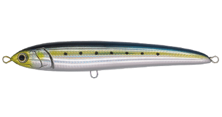
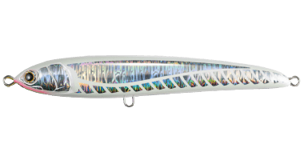
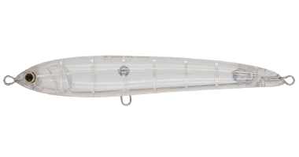
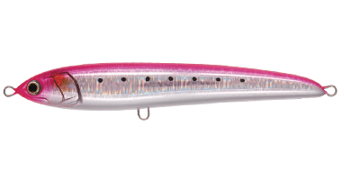

ラピード F230
ラピード F230はMaria（マリア）のダイビングペンシルです。
ルアーを追ってきたのに、食わせきれずに見切って帰っていく青物……。「ここで、こういう動きが出せたら」という想いを叶えるのがラピードです。アングラーの操作に変幻自在のアクションで応える、圧倒的な「食わせ力」を持つダイビングペンシルです。ラピード F230は「玄界灘のヒラマサキャスティングゲーム対応サイズ」です。

画像出典:Maria公式HP
スペック
- メーカー
- Maria（マリア）
- タイプ
- ダイビングペンシル（フローティング）
- 全長
- 230mm
- 重量
- 100g（フック・リングなし）
- フック
- トリプル太軸#4/0〜5/0（シングルなら8〜11g・1本）
- 適正タックル
- 10ft HHクラス・D社6500番・PE8号＋リーダー140lb
- ターゲット
- 大型のヒラマサ・マグロなど
▼今すぐチェック

ラピード F230の特徴
出したいアクションは、何でもできる
-
ロングジャークで生物的な波紋
ロッドを大きく手前に引いて水面直下を泳がせるロングジャークでは、ベイトフィッシュのような生物的な波紋を伴いながらアクションする。
-
ハイテンポでも崩れないバランス
ジャーク幅を短くしてハイテンポで誘ってもバランスを崩さず、水面への飛び出しがない。連続トゥイッチでも小型ペンシルのようなハイレスポンスで、逃げ惑うベイトを演出できる。
-
クラス最高クラスの飛距離
空気抵抗の少ないスリムボディと、ボディ最後部に配置したウエイトで、クラス最高の飛距離を叩き出す。
ラピード F230の使い方
基本はロングジャークで水面直下を泳がせ、ジャークの合間に一瞬止めて食わせの間を作ります。反応が渋い時はジャーク幅を短くしたハイテンポな誘いや、連続トゥイッチに切り替えて、その日の青物が反応する動きを探りましょう。
ラピード F230の得意な状況
玄界灘など、大型ヒラマサを狙うキャスティングゲームに向けたサイズです。PE8号クラスのヘビータックルで、大きなベイトに付いた大型の青物を狙う時に使います。
ルアーを追ってくるのに口を使わない、スレた青物や活性の低い青物を狙う状況が得意です。公式では、スリムでローリングを伴うやや控えめなアクションのラピードは「食わせ」型、ボリュームのあるボディで強い波動を出すローデッドは「アピール」型と紹介されています。
ワンポイント
記載の重さはフックとリングを含まない本体のみの重さです。ヘビータックルに合わせて、太軸のフックを選びましょう。
ラピードのサイズの使い分け
| モデル | 全長・重さ | 特徴 |
|---|---|---|
| ラピード F130 | 130mm・30g | シーバスタックルでも使える、ライトショアプラッギング対応モデル |
| ラピード F160 | 160mm・50g | 意のままに動く圧倒的「食わせ力」を持つダイビングペンシル |
| ラピード F190 | 190mm・65g（フック・リングなし） | マッチ・ザ・ベイト対応のラピード 190mmモデル |
| ラピード F230（この記事） | 230mm・100g（フック・リングなし） | 玄界灘のヒラマサキャスティングゲーム対応サイズ |
※数値は公式ページより。各サイズの記事もあわせてご覧ください。
オススメカラー
ラピード F230のカラーから4色を紹介します。

001 イワシソルトゲームのド定番ベイトカラー。カラーに困ったときはイワシ。

002 血みどろ弱って血のにじんだベイトをイメージした赤系。日中の低活性時や晴れ間に。

008 玄界クリア透け感のあるクリア系。澄んだ潮で見切られにくい。

009 ピンクイワシ背中の蛍光ピンクで視認性が高く、ルアーの位置やバイトが分かりやすい。
画像出典:Maria公式HP
ラピード F230に似ているルアー
-
 ラピード F190
マリア
詳細はこちら＞
ラピード F190
マリア
詳細はこちら＞
同じラピードの190mmモデル。マッチ・ザ・ベイト対応のラピード 190mmモデル。
-
 ラピード F160
マリア
詳細はこちら＞
ラピード F160
マリア
詳細はこちら＞
同じラピードの160mmモデル。意のままに動く圧倒的「食わせ力」を持つダイビングペンシル。
-
 レガート F230
マリア
詳細はこちら＞
レガート F230
マリア
詳細はこちら＞
高速リトリーブ対応のペンシル。日中やベタ凪で見切られる時の持ち替え先に。